把目前做好的畫面、新需求的線框稿和體驗版截圖放在一起，方便大家對照確認。點任何一張圖可以開大圖。裡面全是虛構數字或空帳本。
正式 App 的新畫面（手機寬度，空帳本）。程式已寫好、測試全過，還沒發布到正式網站。
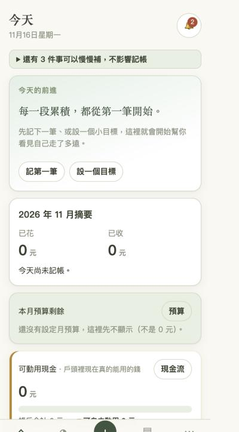
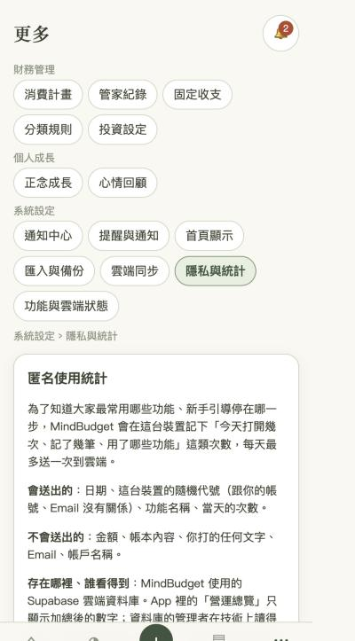
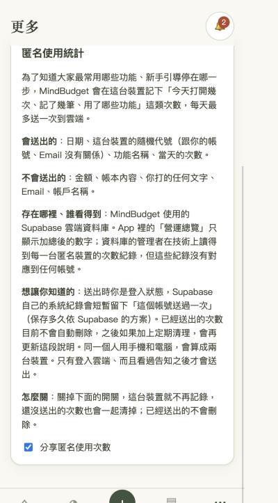
個人簡化三表（FR-85）：手機載具發票匯入後，和自己記的帳放在同一張明細。四種畫面選項，已選 A。
載具匯入＋手記合併：四種畫面選項A 並排提醒、我決定（已選）／B 自動合成一筆／C 只放在一起看／D 左右對照（對帳式）。疑似同一筆的兩筆並排，由你決定要不要合成。
打開線框稿 →體驗版裡的原型畫面。正式版先做「今天的前進」和「營運總覽」，其餘後台分頁仍是原型。
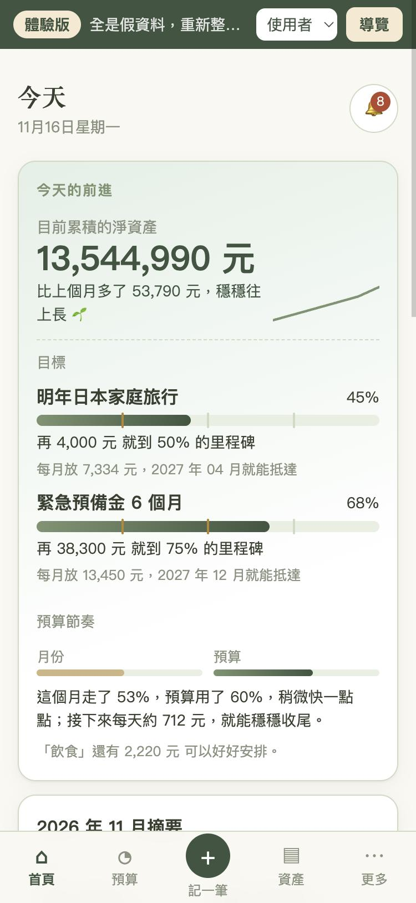
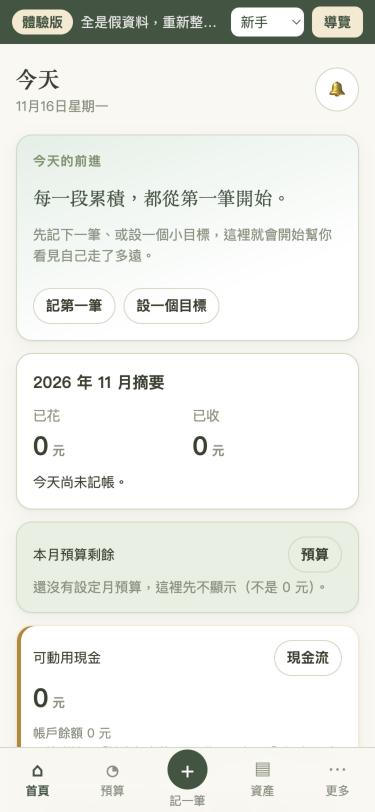
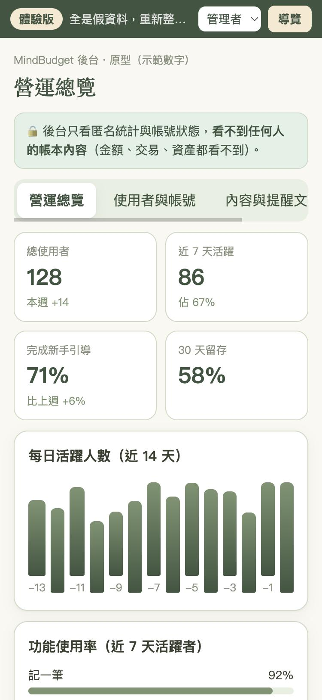
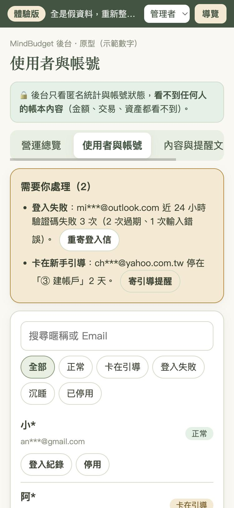
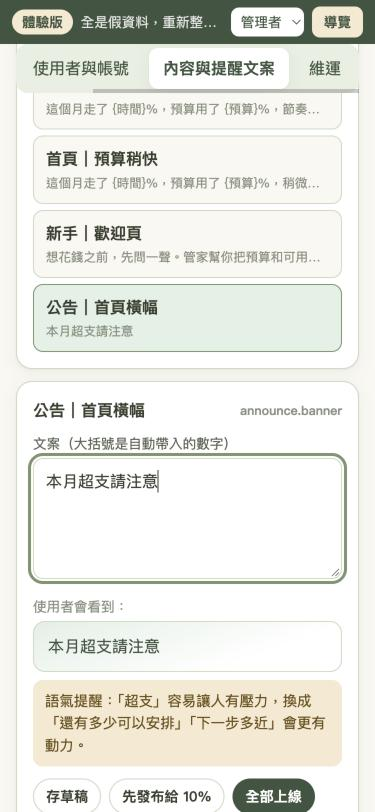
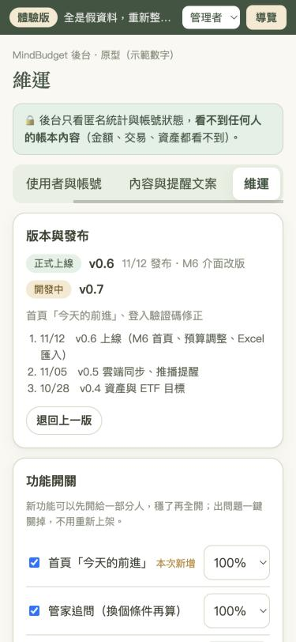
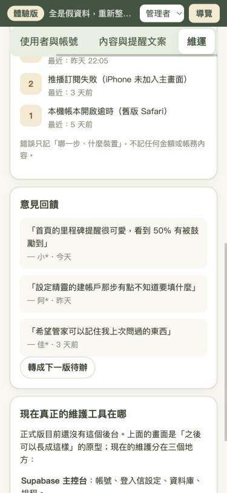
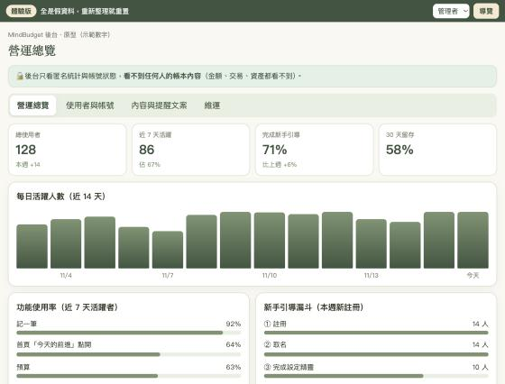
打開體驗版後，選管理者／使用者／新手看到的主要畫面。
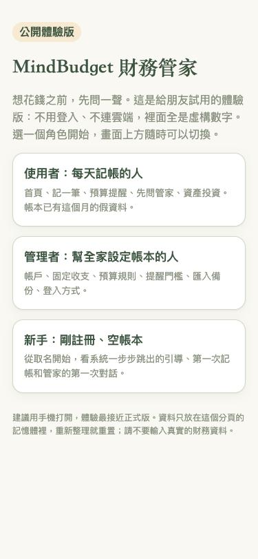
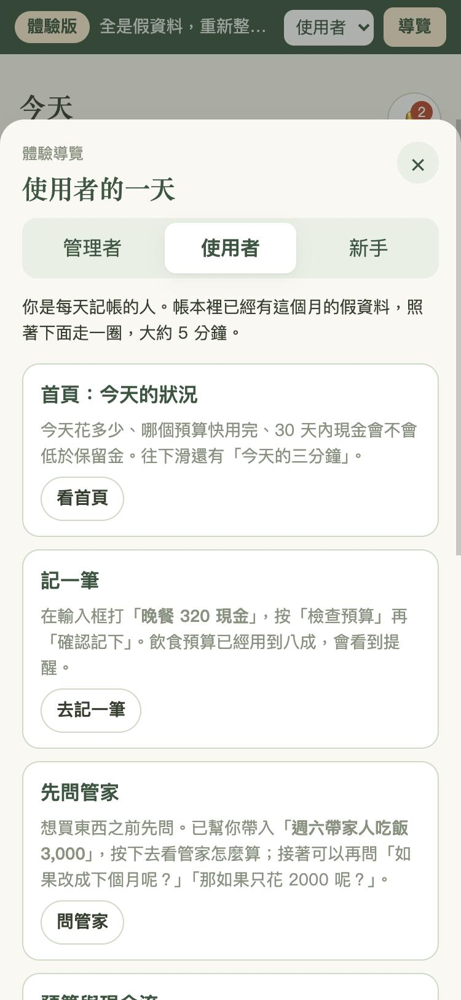
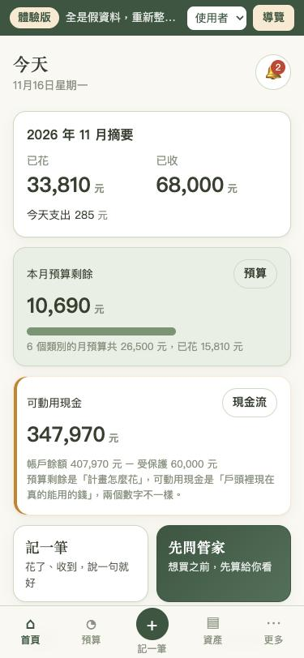
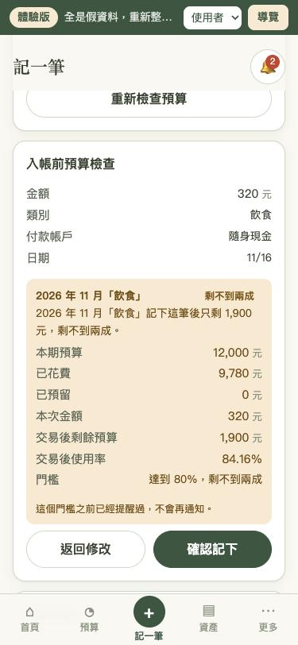
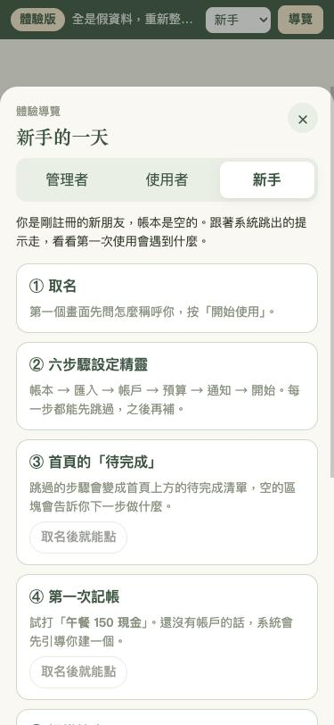
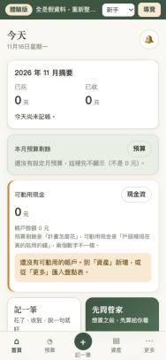
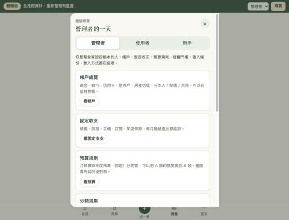